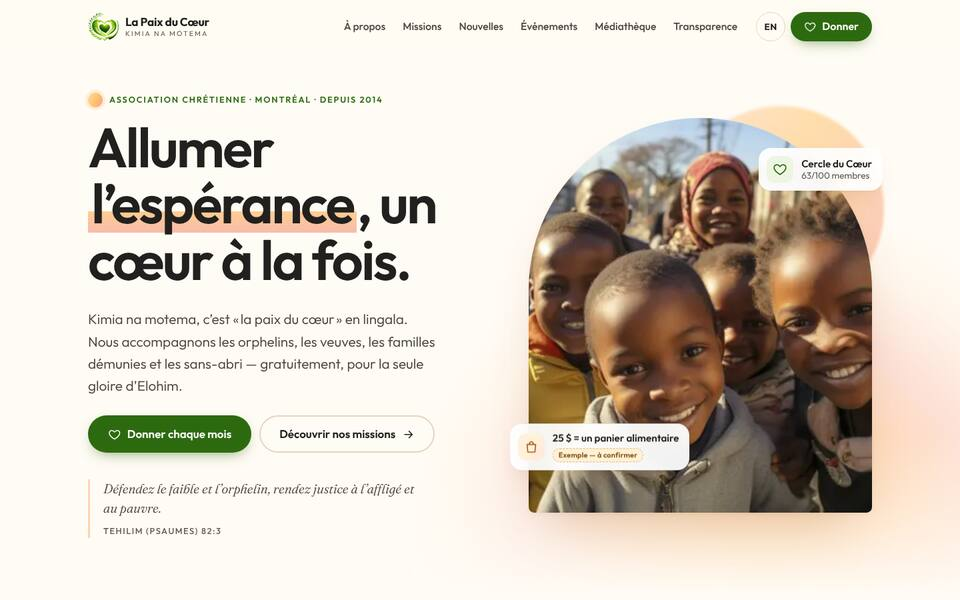
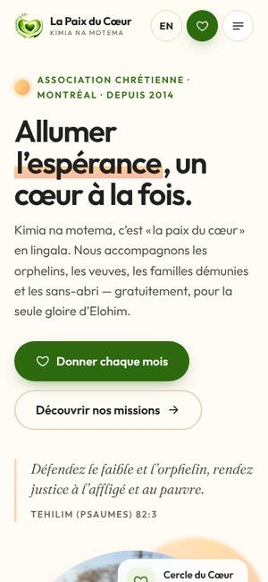
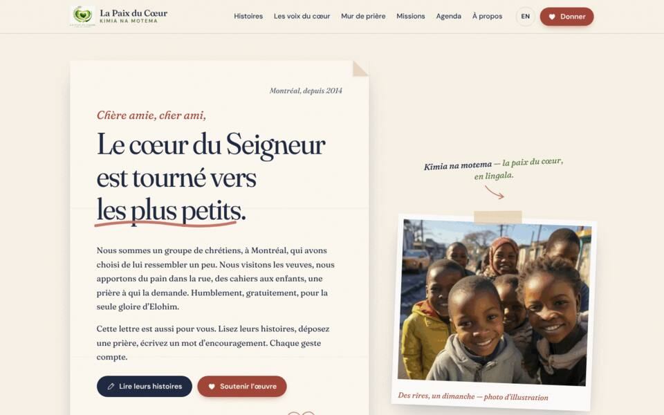
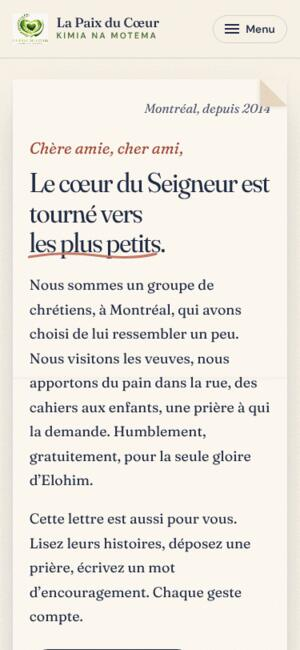
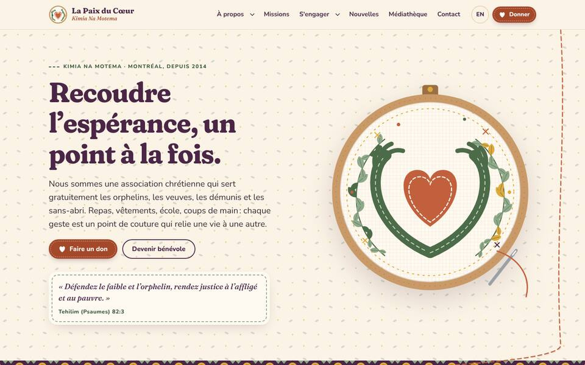
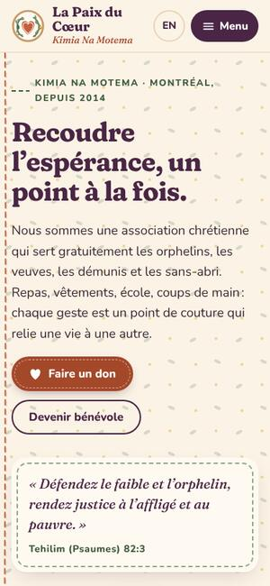
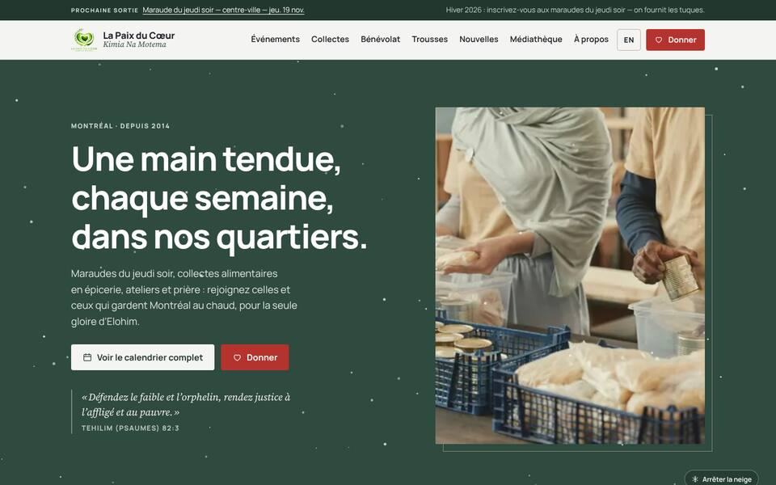
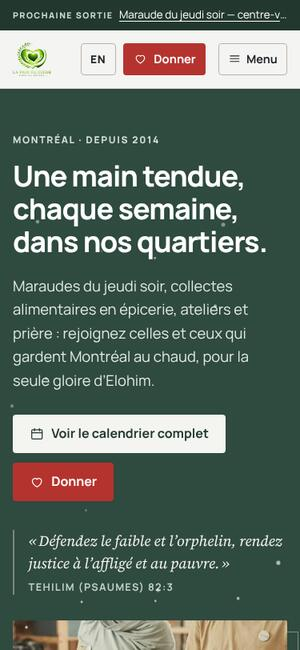
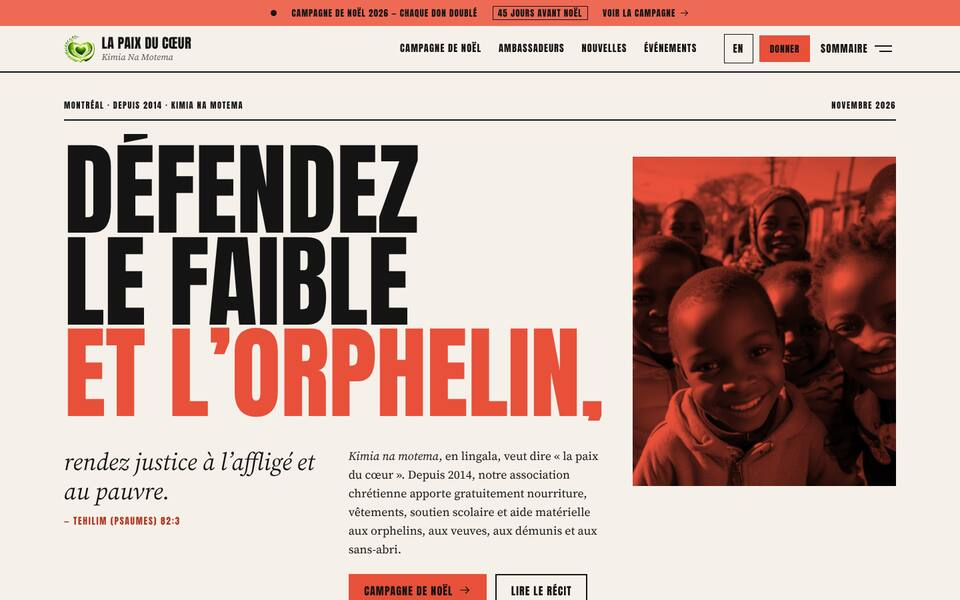
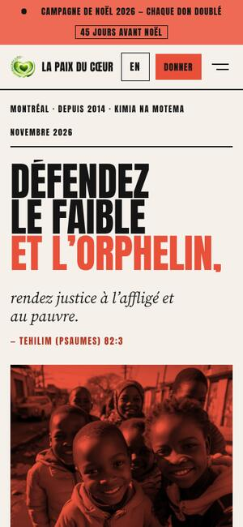

<title>La Paix du Cœur Proposals</title>
<meta name="claude:viewport-fit-sides" content="cover">
<link rel="preconnect" href="https://fonts.googleapis.com">
<link rel="preconnect" href="https://fonts.gstatic.com" crossorigin>
<link rel="stylesheet" href="https://fonts.googleapis.com/css2?family=Bricolage+Grotesque:opsz,wght@12..96,500;12..96,700&family=Inter:wght@400;500;600&display=swap">
<style>
/* Layout: a single reading column (max 1080px) with full-bleed tinted bands per part; proposals are stacked "case" blocks with desktop + phone captures. */
:root {
  --bg: #F6F7F2;
  --surface: #FFFFFF;
  --ink: #1A221B;
  --muted: #586459;
  --line: #DCE2D6;
  --accent: #2D6A0F;
  --accent-ink: #FFFFFF;
  --accent-soft: #E5EFDC;
  --warn: #8A5A12;
  --warn-soft: #FBF0D9;
  --band: #EEF2E8;
  --display: "Bricolage Grotesque", "Avenir Next", "Segoe UI", system-ui, sans-serif;
  --body: "Inter", system-ui, -apple-system, "Segoe UI", Roboto, sans-serif;
  --mono: ui-monospace, "SF Mono", Menlo, Consolas, monospace;
}
@media (prefers-color-scheme: dark) {
  :root:not([data-theme="light"]) {
    --bg: #111612; --surface: #19201A; --ink: #E7EEE4; --muted: #A2AFA0; --line: #2C362C;
    --accent: #8FCB6C; --accent-ink: #0F1A0B; --accent-soft: #213019; --warn: #F0C46E; --warn-soft: #3A2E15; --band: #151C16;
    color-scheme: dark;
  }
}
:root[data-theme="dark"] {
  --bg: #111612; --surface: #19201A; --ink: #E7EEE4; --muted: #A2AFA0; --line: #2C362C;
  --accent: #8FCB6C; --accent-ink: #0F1A0B; --accent-soft: #213019; --warn: #F0C46E; --warn-soft: #3A2E15; --band: #151C16;
  color-scheme: dark;
}
* { box-sizing: border-box; }
body { background: var(--bg); color: var(--ink); font: 400 16px/1.6 var(--body); }
.wrap { max-width: 1080px; margin: 0 auto; padding-left: max(16px, env(safe-area-inset-left, 0px)); padding-right: max(16px, env(safe-area-inset-right, 0px)); }
section { padding-block: 56px; }
.band { background: var(--band); border-block: 1px solid var(--line); }
h1, h2, h3 { font-family: var(--display); line-height: 1.12; text-wrap: balance; margin: 0; }
h1 { font-size: clamp(2.1rem, 5vw, 3.4rem); font-weight: 700; letter-spacing: -0.02em; }
h2 { font-size: clamp(1.6rem, 3.4vw, 2.2rem); font-weight: 700; letter-spacing: -0.01em; }
h3 { font-size: 1.3rem; font-weight: 700; }
p { margin: 0; max-width: 65ch; }
.eyebrow { font: 600 0.75rem/1 var(--body); letter-spacing: 0.12em; text-transform: uppercase; color: var(--accent); }
.lede { font-size: 1.15rem; color: var(--muted); }
.stack { display: flex; flex-direction: column; gap: 16px; }
.muted { color: var(--muted); }
a { color: var(--accent); }
:focus-visible { outline: 3px solid var(--accent); outline-offset: 2px; border-radius: 4px; }
code { font-family: var(--mono); font-size: 0.88em; background: var(--accent-soft); padding: 1px 5px; border-radius: 4px; }

/* hero */
header.top { padding-block: 48px 40px; }
.hero-grid { display: grid; grid-template-columns: 1.3fr 1fr; gap: 40px; align-items: end; }
.verse { border-left: 3px solid var(--accent); padding: 4px 0 4px 16px; font-style: italic; color: var(--muted); }
.verse b { display: block; font-style: normal; font-weight: 600; font-size: 0.8rem; letter-spacing: 0.06em; margin-top: 6px; color: var(--ink); }
.goals { display: grid; grid-template-columns: repeat(2, minmax(0, 1fr)); gap: 10px; margin-top: 28px; }
.goal { background: var(--surface); border: 1px solid var(--line); border-radius: 10px; padding: 12px 14px; min-width: 0; }
.goal strong { display: block; font-size: 0.95rem; }
.goal span { font-size: 0.85rem; color: var(--muted); }
nav.jump { display: flex; flex-wrap: wrap; gap: 8px; margin-top: 28px; }
nav.jump a { text-decoration: none; color: var(--ink); border: 1px solid var(--line); background: var(--surface); padding: 6px 12px; border-radius: 999px; font-size: 0.88rem; }
nav.jump a:hover { border-color: var(--accent); color: var(--accent); }

/* proposals */
.proposal { display: grid; grid-template-columns: minmax(0, 1.55fr) minmax(0, 1fr); gap: 32px; padding-block: 40px; border-top: 1px solid var(--line); }
.proposal:first-of-type { border-top: 0; }
.shots { position: relative; padding-right: 70px; padding-bottom: 30px; }
.shots img { display: block; border-radius: 10px; border: 1px solid var(--line); box-shadow: 0 12px 30px -18px rgba(0,0,0,.35); background: var(--surface); }
.shots .desk { width: 100%; height: auto; aspect-ratio: 960 / 600; object-fit: cover; object-position: top; }
.shots .phone { position: absolute; right: 0; bottom: 0; width: 26%; max-width: 150px; height: auto; aspect-ratio: 300 / 650; object-fit: cover; object-position: top; border-radius: 16px; border: 4px solid var(--ink); }
.num { font: 700 0.85rem/1 var(--mono); color: var(--muted); }
.proposal h3 { font-size: 1.7rem; margin-top: 6px; }
.proposal .en { color: var(--muted); font-size: 0.95rem; }
.swatches { display: flex; gap: 6px; margin-top: 2px; }
.swatches i { width: 26px; height: 26px; border-radius: 50%; border: 1px solid var(--line); display: block; }
.kv { display: grid; grid-template-columns: 6.5em minmax(0, 1fr); gap: 6px 12px; font-size: 0.93rem; }
.kv dt { color: var(--muted); font-weight: 500; }
.kv dd { margin: 0; }
ul.feat { margin: 0; padding-left: 1.1em; display: flex; flex-direction: column; gap: 4px; font-size: 0.93rem; }
.best { background: var(--accent-soft); border-radius: 10px; padding: 10px 14px; font-size: 0.92rem; }
.best b { color: var(--accent); }

/* matrix */
.tablebox { overflow-x: auto; border: 1px solid var(--line); border-radius: 12px; background: var(--surface); margin-top: 24px; }
table { border-collapse: collapse; width: 100%; min-width: 720px; font-size: 0.9rem; }
th, td { padding: 9px 12px; border-bottom: 1px solid var(--line); text-align: left; vertical-align: top; }
thead th { font-family: var(--display); font-size: 0.95rem; background: var(--band); position: sticky; top: 0; }
tbody tr:last-child td { border-bottom: 0; }
td.c { text-align: center; width: 11%; }
.dot { display: inline-block; width: 12px; height: 12px; border-radius: 50%; background: var(--accent); }
.ring { display: inline-block; width: 12px; height: 12px; border-radius: 50%; border: 2px solid var(--accent); }
.dash { color: var(--muted); }
tr.group td { background: var(--band); font-weight: 600; font-size: 0.78rem; letter-spacing: 0.08em; text-transform: uppercase; color: var(--muted); }
.legend { display: flex; flex-wrap: wrap; gap: 18px; font-size: 0.85rem; color: var(--muted); margin-top: 12px; align-items: center; }
.legend span { display: inline-flex; align-items: center; gap: 6px; }

/* foundation */
.grid3 { display: grid; grid-template-columns: repeat(3, minmax(0, 1fr)); gap: 16px; margin-top: 24px; }
.tile { background: var(--surface); border: 1px solid var(--line); border-radius: 12px; padding: 18px; display: flex; flex-direction: column; gap: 8px; min-width: 0; }
.tile h3 { font-size: 1.05rem; }
.tile p, .tile li { font-size: 0.9rem; color: var(--muted); }
.tile ul { margin: 0; padding-left: 1.1em; }

/* flow diagram */
.flow { margin-top: 28px; background: var(--surface); border: 1px solid var(--line); border-radius: 14px; padding: 20px; overflow-x: auto; }
.flow svg { display: block; width: 100%; min-width: 760px; height: auto; }
.flow .box { fill: var(--band); stroke: var(--line); }
.flow .box.hl { fill: var(--accent-soft); stroke: var(--accent); }
.flow text { fill: var(--ink); font-family: var(--body); font-size: 13px; }
.flow .t { font-family: var(--display); font-size: 15px; font-weight: 700; }
.flow .s { fill: var(--muted); font-size: 12px; }
.flow .arrow { stroke: var(--accent); stroke-width: 2; fill: none; marker-end: url(#ah); }
.flow .lbl { fill: var(--accent); font-size: 11.5px; font-weight: 600; }
.flow #ah path { fill: var(--accent); }
.two { display: grid; grid-template-columns: repeat(2, minmax(0, 1fr)); gap: 20px; margin-top: 24px; }
pre.example { margin: 0; background: var(--ink); color: var(--bg); border-radius: 12px; padding: 16px; font: 0.82rem/1.55 var(--mono); overflow-x: auto; white-space: pre; }
pre.example .k { color: var(--accent); }
.howto { width: 100%; min-width: 0; }
.howto td:first-child { font-weight: 500; }
.when { white-space: nowrap; color: var(--muted); }

/* roadmap */
.phase { margin-top: 28px; }
.phase-head { display: flex; align-items: baseline; gap: 12px; flex-wrap: wrap; }
.ideas { display: grid; grid-template-columns: repeat(3, minmax(0, 1fr)); gap: 12px; margin-top: 14px; }
.idea { background: var(--surface); border: 1px solid var(--line); border-radius: 10px; padding: 14px; display: flex; flex-direction: column; gap: 6px; min-width: 0; }
.idea h4 { margin: 0; font: 600 0.98rem/1.3 var(--body); }
.idea p { font-size: 0.86rem; color: var(--muted); }
.tags { display: flex; flex-wrap: wrap; gap: 6px; margin-top: auto; padding-top: 4px; }
.tag { font-size: 0.72rem; font-weight: 600; padding: 2px 8px; border-radius: 999px; background: var(--band); color: var(--muted); border: 1px solid var(--line); }
.tag.lo { background: var(--accent-soft); color: var(--accent); border-color: transparent; }
.tag.hi { background: var(--warn-soft); color: var(--warn); border-color: transparent; }
.filters { display: flex; flex-wrap: wrap; gap: 8px; margin-top: 18px; }
.filters button { font: 500 0.85rem var(--body); color: var(--ink); background: var(--surface); border: 1px solid var(--line); padding: 6px 12px; border-radius: 999px; cursor: pointer; }
.filters button[aria-pressed="true"] { background: var(--accent); color: var(--accent-ink); border-color: var(--accent); }

/* questions */
ol.q { margin: 18px 0 0; padding-left: 1.3em; display: flex; flex-direction: column; gap: 8px; max-width: 70ch; }
.tbc { background: var(--warn-soft); color: var(--warn); font-size: 0.78rem; font-weight: 600; padding: 1px 7px; border-radius: 4px; white-space: nowrap; }
footer { padding-block: 32px 48px; color: var(--muted); font-size: 0.85rem; border-top: 1px solid var(--line); }

@media (max-width: 860px) {
  .hero-grid, .proposal, .two { grid-template-columns: minmax(0, 1fr); }
  .grid3, .ideas { grid-template-columns: repeat(2, minmax(0, 1fr)); }
}
@media (max-width: 560px) {
  .grid3, .ideas, .goals { grid-template-columns: minmax(0, 1fr); }
  section { padding-block: 40px; }
  .shots { padding-right: 52px; }
}
@media (prefers-reduced-motion: no-preference) { html { scroll-behavior: smooth; } }
</style>

<header class="top">
  <div class="wrap">
    <div class="hero-grid">
      <div class="stack">
        <span class="eyebrow">La Paix du Cœur · Kimia Na Motema · Montréal, since 2014</span>
        <h1>Five ways to make the website a voice for the orphans</h1>
        <p class="lede">Five complete, bilingual (French&nbsp;/&nbsp;English) redesigns of lapaixducoeur.ca. All five share the same secure, search-friendly foundation. Each one has its own look and focuses on a different way of reaching people.</p>
      </div>
      <p class="verse">«&nbsp;Défendez le faible et l’orphelin, rendez justice à l’affligé et au pauvre.&nbsp;»<b>Tehilim (Psaumes) 82:3</b></p>
    </div>
    <div class="goals" aria-label="What the association asked for">
      <div class="goal"><strong>Modern &amp; professional</strong><span>Five art directions, each with its own type, palette and motion.</span></div>
      <div class="goal"><strong>More secure</strong><span>Static site with no database or login page to attack, plus browser security rules. Bank account numbers are no longer published.</span></div>
      <div class="goal"><strong>Found on Google</strong><span>Separate French and English pages, a unique title on every page, information search engines read, and a sitemap.</span></div>
      <div class="goal"><strong>Easy to update</strong><span>Events from Google Calendar; news, photos, video and audio from a simple admin page.</span></div>
      <div class="goal"><strong>Love &amp; compassion first</strong><span>Faith-rooted storytelling that respects the dignity of the people shown, built around the heart-in-hands logo.</span></div>
      <div class="goal"><strong>Mobilize, not just inform</strong><span>Giving, prayer, volunteering, events and campaigns are built into every page.</span></div>
    </div>
    <nav class="jump" aria-label="Sections">
      <a href="#proposals">The 5 proposals</a>
      <a href="#compare">Compare features</a>
      <a href="#foundation">Shared foundation</a>
      <a href="#content">Adding content &amp; calendar sync</a>
      <a href="#next">Features to add next</a>
      <a href="#questions">Questions for the association</a>
    </nav>
  </div>
</header>

<section id="proposals" class="band">
  <div class="wrap">
    <div class="stack">
      <span class="eyebrow">The proposals</span>
      <h2>Same mission, five personalities</h2>
      <p class="muted">Each proposal is a working site, about 40–70 pages in each language, checked automatically on phone and desktop. Figures, names and dates the association hasn’t confirmed yet are shown as visible <span class="tbc">Exemple — à confirmer</span> markers, never invented.</p>
    </div>

    <article class="proposal" id="p1">
      <div class="shots">
        
        
      </div>
      <div class="stack">
        <span class="num">01</span>
        <h3>Lumière d’espérance</h3>
        <span class="en">Light of Hope</span>
        <div class="swatches" aria-hidden="true"><i style="background:#FFFBF5"></i><i style="background:#F2B544"></i><i style="background:#F08A6B"></i><i style="background:#2D6A0F"></i></div>
        <dl class="kv">
          <dt>Look</dt><dd>Bright and hopeful: a sunrise gradient, round friendly type, and a soft light that follows the mouse.</dd>
          <dt>Focus</dt><dd>Giving and transparency.</dd>
        </dl>
        <ul class="feat">
          <li>Donation form where each amount says what it pays for; monthly giving selected by default; a gift can be made in someone’s honour</li>
          <li>«&nbsp;Le Cercle du Cœur&nbsp;», a monthly giving circle with a progress goal</li>
          <li>“Where your gift goes” slider showing the split across the four aid areas</li>
          <li>Transparency page: annual report as a web page, safeguarding commitment, tax-receipt FAQ</li>
        </ul>
        <p class="best"><b>Choose it if</b> the priority is raising regular, reliable donations.</p>
      </div>
    </article>

    <article class="proposal" id="p2">
      <div class="shots">
        
        
      </div>
      <div class="stack">
        <span class="num">02</span>
        <h3>Lettre d’amour</h3>
        <span class="en">Love Letter</span>
        <div class="swatches" aria-hidden="true"><i style="background:#FAF5EC"></i><i style="background:#1F2A44"></i><i style="background:#C9786A"></i><i style="background:#4E7A2E"></i></div>
        <dl class="kv">
          <dt>Look</dt><dd>Intimate, like a handwritten letter: paper, ink, wax seals, and a heart that draws itself.</dd>
          <dt>Focus</dt><dd>Stories and faith.</dd>
        </dl>
        <ul class="feat">
          <li>Story hub with tags; long stories told with dignity (first names only)</li>
          <li>«&nbsp;Les voix du cœur&nbsp;» podcast, with transcripts in both languages</li>
          <li>Moderated prayer and hope wall, with an «&nbsp;J’ai prié&nbsp;» (“I prayed”) button</li>
          <li>Letters of encouragement, always delivered by the team; verse of the week</li>
        </ul>
        <p class="best"><b>Choose it if</b> the heart of the work is prayer, presence and testimony.</p>
      </div>
    </article>

    <article class="proposal" id="p3">
      <div class="shots">
        
        
      </div>
      <div class="stack">
        <span class="num">03</span>
        <h3>Kimia</h3>
        <span class="en">Peace of the heart, in Lingala</span>
        <div class="swatches" aria-hidden="true"><i style="background:#C2603D"></i><i style="background:#8FA98A"></i><i style="background:#E0A93B"></i><i style="background:#4A2545"></i></div>
        <dl class="kv">
          <dt>Look</dt><dd>Hand-made illustration with embroidery and textile patterns; a thread stitches the page together as you scroll.</dd>
          <dt>Focus</dt><dd>The mission and its journey.</dd>
        </dl>
        <ul class="feat">
          <li>Interactive timeline from 2014 to today</li>
          <li>The four aid areas as illustrated cards that flip over</li>
          <li>“Where we serve” map that shows regions only, never exact places, to protect children</li>
          <li>Four-step volunteer sign-up matched by skill; gallery</li>
        </ul>
        <p class="best"><b>Choose it if</b> there are few photos that can safely be published: illustration carries the story instead.</p>
      </div>
    </article>

    <article class="proposal" id="p4">
      <div class="shots">
        
        
      </div>
      <div class="stack">
        <span class="num">04</span>
        <h3>Chaleur du Nord</h3>
        <span class="en">Northern Warmth</span>
        <div class="swatches" aria-hidden="true"><i style="background:#F4F4F1"></i><i style="background:#2F4A3F"></i><i style="background:#B5332E"></i><i style="background:#E8DFD0"></i></div>
        <dl class="kv">
          <dt>Look</dt><dd>Calm and Nordic with a Québec feel: pine, maple, birch, knit patterns, and gentle snow in winter.</dd>
          <dt>Focus</dt><dd>Mobilizing the local community.</dd>
        </dl>
        <ul class="feat">
          <li>Calendar of events and street outreach («&nbsp;maraudes&nbsp;»), by month or as a list, that visitors can subscribe to</li>
          <li>Food-drive finder by neighbourhood</li>
          <li>Volunteer shifts showing how many spots are left</li>
          <li>Toolkits for churches, schools and businesses; newsletter with topic choices</li>
        </ul>
        <p class="best"><b>Choose it if</b> the work is mostly weekly, on the ground in Montréal.</p>
      </div>
    </article>

    <article class="proposal" id="p5">
      <div class="shots">
        
        
      </div>
      <div class="stack">
        <span class="num">05</span>
        <h3>Cœur ouvert</h3>
        <span class="en">Open Heart</span>
        <div class="swatches" aria-hidden="true"><i style="background:#F5F1EA"></i><i style="background:#141414"></i><i style="background:#E8503A"></i><i style="background:#B23A26"></i></div>
        <dl class="kv">
          <dt>Look</dt><dd>Bold magazine layout: giant headlines, black-and-white photos, one coral accent, and the word ESPOIR (hope) that zooms in as you scroll.</dd>
          <dt>Focus</dt><dd>Awareness and campaigns.</dd>
        </dl>
        <ul class="feat">
          <li>Christmas 2026 campaign: fundraising thermometer, countdown, matching gifts, gift catalogue</li>
          <li>Ambassador fundraising pages for birthdays, runs and church groups</li>
          <li>Generator for shareable verse cards, downloaded as images for social media</li>
          <li>Video hub and press kit</li>
        </ul>
        <p class="best"><b>Choose it if</b> the goal is to grow, campaign and be talked about.</p>
      </div>
    </article>
  </div>
</section>

<section id="compare">
  <div class="wrap">
    <div class="stack">
      <span class="eyebrow">Compare</span>
      <h2>What each proposal already does</h2>
      <p class="muted">Features are easy to move from one proposal to another. Picking one look does not rule out features from the others.</p>
    </div>
    <div class="legend" aria-hidden="true">
      <span><i class="dot"></i> Main feature of this proposal</span>
      <span><i class="ring"></i> Included, simpler version</span>
      <span><b class="dash">—</b> Not included yet</span>
    </div>
    <div class="tablebox" role="region" aria-label="Feature comparison" tabindex="0">
      <table>
        <thead><tr><th scope="col">Feature</th><th scope="col" class="c">1 Lumière</th><th scope="col" class="c">2 Lettre</th><th scope="col" class="c">3 Kimia</th><th scope="col" class="c">4 Nord</th><th scope="col" class="c">5 Cœur ouvert</th></tr></thead>
        <tbody>
          <tr class="group"><td colspan="6">Giving</td></tr>
          <tr><td>Donation form where each amount says what it pays for (Zeffy + Interac)</td><td class="c"><i class="dot" role="img" aria-label="main"></i></td><td class="c"><i class="ring" role="img" aria-label="included"></i></td><td class="c"><i class="ring" role="img" aria-label="included"></i></td><td class="c"><i class="ring" role="img" aria-label="included"></i></td><td class="c"><i class="ring" role="img" aria-label="included"></i></td></tr>
          <tr><td>Monthly giving circle</td><td class="c"><i class="dot" role="img" aria-label="main"></i></td><td class="c dash">—</td><td class="c dash">—</td><td class="c dash">—</td><td class="c dash">—</td></tr>
          <tr><td>“Where your gift goes” and the transparency page</td><td class="c"><i class="dot" role="img" aria-label="main"></i></td><td class="c dash">—</td><td class="c dash">—</td><td class="c dash">—</td><td class="c dash">—</td></tr>
          <tr><td>Campaign with progress bar and gift catalogue</td><td class="c dash">—</td><td class="c dash">—</td><td class="c dash">—</td><td class="c dash">—</td><td class="c"><i class="dot" role="img" aria-label="main"></i></td></tr>
          <tr><td>Ambassador fundraising pages</td><td class="c dash">—</td><td class="c dash">—</td><td class="c dash">—</td><td class="c dash">—</td><td class="c"><i class="dot" role="img" aria-label="main"></i></td></tr>
          <tr class="group"><td colspan="6">Stories &amp; faith</td></tr>
          <tr><td>Story hub</td><td class="c dash">—</td><td class="c"><i class="dot" role="img" aria-label="main"></i></td><td class="c dash">—</td><td class="c dash">—</td><td class="c dash">—</td></tr>
          <tr><td>Podcast or audio with transcripts</td><td class="c"><i class="ring" role="img" aria-label="included"></i></td><td class="c"><i class="dot" role="img" aria-label="main"></i></td><td class="c"><i class="ring" role="img" aria-label="included"></i></td><td class="c"><i class="ring" role="img" aria-label="included"></i></td><td class="c"><i class="ring" role="img" aria-label="included"></i></td></tr>
          <tr><td>Prayer and hope wall</td><td class="c"><i class="ring" role="img" aria-label="included"></i></td><td class="c"><i class="dot" role="img" aria-label="main"></i></td><td class="c dash">—</td><td class="c dash">—</td><td class="c dash">—</td></tr>
          <tr><td>Shareable verse cards</td><td class="c dash">—</td><td class="c dash">—</td><td class="c dash">—</td><td class="c dash">—</td><td class="c"><i class="dot" role="img" aria-label="main"></i></td></tr>
          <tr class="group"><td colspan="6">Community</td></tr>
          <tr><td>Events with “Add to my calendar” for each event</td><td class="c"><i class="ring" role="img" aria-label="included"></i></td><td class="c"><i class="ring" role="img" aria-label="included"></i></td><td class="c"><i class="ring" role="img" aria-label="included"></i></td><td class="c"><i class="dot" role="img" aria-label="main"></i></td><td class="c"><i class="ring" role="img" aria-label="included"></i></td></tr>
          <tr><td>Subscribe to the association’s calendar + Google Calendar sync</td><td class="c"><i class="ring" role="img" aria-label="included"></i></td><td class="c"><i class="ring" role="img" aria-label="included"></i></td><td class="c"><i class="ring" role="img" aria-label="included"></i></td><td class="c"><i class="dot" role="img" aria-label="main"></i></td><td class="c"><i class="ring" role="img" aria-label="included"></i></td></tr>
          <tr><td>Volunteer sign-up</td><td class="c"><i class="ring" role="img" aria-label="included"></i></td><td class="c dash">—</td><td class="c"><i class="dot" role="img" aria-label="main"></i></td><td class="c"><i class="dot" role="img" aria-label="main"></i></td><td class="c dash">—</td></tr>
          <tr><td>Food-drive finder</td><td class="c dash">—</td><td class="c dash">—</td><td class="c dash">—</td><td class="c"><i class="dot" role="img" aria-label="main"></i></td><td class="c dash">—</td></tr>
          <tr><td>Toolkits for churches and schools</td><td class="c dash">—</td><td class="c dash">—</td><td class="c dash">—</td><td class="c"><i class="dot" role="img" aria-label="main"></i></td><td class="c dash">—</td></tr>
          <tr><td>Timeline and map that never show exact locations</td><td class="c dash">—</td><td class="c dash">—</td><td class="c"><i class="dot" role="img" aria-label="main"></i></td><td class="c dash">—</td><td class="c dash">—</td></tr>
          <tr><td>Press kit</td><td class="c dash">—</td><td class="c dash">—</td><td class="c dash">—</td><td class="c dash">—</td><td class="c"><i class="dot" role="img" aria-label="main"></i></td></tr>
        </tbody>
      </table>
    </div>
  </div>
</section>

<section id="foundation" class="band">
  <div class="wrap">
    <div class="stack">
      <span class="eyebrow">Shared foundation</span>
      <h2>What every proposal fixes</h2>
      <p class="muted">An audit of today’s site found an empty page title on every page, which Google needs to show the site properly. It also found the full bank account numbers published openly, no English version, no way to donate online, and leftover WordPress test pages.</p>
    </div>
    <div class="grid3">
      <div class="tile"><h3>Security</h3><ul><li>No database, no WordPress plugins and no login page on the live site, so far less to attack</li><li>Browser security rules (HTTPS-only, a strict content policy) and a donation platform that handles all card payments</li><li>Bank details given only on request</li></ul></div>
      <div class="tile"><h3>Search &amp; sharing</h3><ul><li>Separate <code>/fr/</code> and <code>/en/</code> addresses, linked so Google shows the right language</li><li>A unique title and description on every page, plus a preview image when links are shared</li><li>Information search engines read about the organization, events and news, and a sitemap</li></ul></div>
      <div class="tile"><h3>Speed &amp; access</h3><ul><li>About 15&nbsp;KB of JavaScript per page; lightweight images</li><li>Videos load only when clicked</li><li>Designed to the WCAG 2.2 AA accessibility standard: keyboard use, good contrast, reduced motion</li></ul></div>
      <div class="tile"><h3>Privacy (Law 25)</h3><ul><li>Bilingual privacy page with a named privacy officer <span class="tbc">à confirmer</span></li><li>Visitor statistics without cookies, so no cookie banner is needed</li><li>Consent rules for photos of children</li></ul></div>
      <div class="tile"><h3>Ethics</h3><ul><li>Hope before need, never pity</li><li>First names only; no exact places</li><li>A published commitment to telling stories ethically</li></ul></div>
      <div class="tile"><h3>Cost to run</h3><p>About $20 CAD a year for the domain. Cloudflare Pages hosting is free. Zeffy charges no fees to charities and issues CRA tax receipts automatically.</p></div>
    </div>
  </div>
</section>

<section id="content">
  <div class="wrap">
    <div class="stack">
      <span class="eyebrow">Adding content</span>
      <h2>Two familiar tools, no developer needed</h2>
      <p class="muted">Events come from a <b>Google Calendar</b> the team already knows how to use, from a phone. Everything else (news, stories, photos, videos, audio, page text) is edited in a simple form at <code>/admin</code>, with French and English side by side and a translate button that fills in a first draft.</p>
    </div>

    <div class="flow" role="img" aria-label="Diagram: the team adds events in Google Calendar and content in the site admin. An hourly job syncs the calendar and rebuilds the site. Visitors subscribe and see events appear in their own Apple, Google or Outlook calendar.">
      <svg viewBox="0 0 980 300" xmlns="http://www.w3.org/2000/svg" aria-hidden="true">
        <defs><marker id="ah" viewBox="0 0 10 10" refX="9" refY="5" markerWidth="7" markerHeight="7" orient="auto-start-reverse"><path d="M0 0L10 5L0 10z"/></marker></defs>
        <rect class="box" x="10" y="20" width="210" height="110" rx="12"/>
        <text class="t" x="28" y="52">Google Calendar</text>
        <text class="s" x="28" y="76">Weekly maraudes, food drives,</text>
        <text class="s" x="28" y="94">workshops, prayer evenings</text>
        <text class="s" x="28" y="112">Edited from any phone</text>
        <rect class="box" x="10" y="170" width="210" height="110" rx="12"/>
        <text class="t" x="28" y="202">Site admin (/admin)</text>
        <text class="s" x="28" y="226">News, stories, photos, videos,</text>
        <text class="s" x="28" y="244">audio, special events, texts</text>
        <text class="s" x="28" y="262">French + English side by side</text>
        <rect class="box hl" x="330" y="95" width="230" height="110" rx="12"/>
        <text class="t" x="348" y="127">Automatic publishing</text>
        <text class="s" x="348" y="151">Every hour + on each save:</text>
        <text class="s" x="348" y="169">sync calendar → build → deploy</text>
        <text class="s" x="348" y="187">“Publish now” button too</text>
        <rect class="box" x="670" y="20" width="300" height="110" rx="12"/>
        <text class="t" x="688" y="52">Website, FR + EN</text>
        <text class="s" x="688" y="76">Event pages, list, calendar view,</text>
        <text class="s" x="688" y="94">Google-ready event information</text>
        <text class="s" x="688" y="112">Subscribe button on every event</text>
        <rect class="box hl" x="670" y="170" width="300" height="110" rx="12"/>
        <text class="t" x="688" y="202">Supporters’ own calendars</text>
        <text class="s" x="688" y="226">Apple, Google, Outlook subscribe once;</text>
        <text class="s" x="688" y="244">new events appear by themselves</text>
        <text class="s" x="688" y="262">(the best reminder tool there is)</text>
        <path class="arrow" d="M220 75 C 280 75, 280 130, 326 135"/>
        <path class="arrow" d="M220 225 C 280 225, 280 170, 326 165"/>
        <text class="lbl" x="236" y="62">public iCal feed</text>
        <text class="lbl" x="236" y="250">saved to GitHub</text>
        <path class="arrow" d="M560 135 C 610 135, 610 75, 666 75"/>
        <path class="arrow" d="M820 130 L 820 166"/>
        <text class="lbl" x="830" y="153">calendar feed</text>
      </svg>
    </div>

    <div class="two">
      <div class="stack">
        <h3>How the team writes an event in Google Calendar</h3>
        <p class="muted">Write the title in French, then a vertical bar, then English. The description is French text, then a line containing just <code>EN</code>, then the English text. Optional lines add a category, a sign-up link or a meeting point. Events marked <b>Private</b> never appear on the site.</p>
<pre class="example" aria-label="Example Google Calendar event">Title:  Maraude du jeudi soir | Thursday-night street outreach
Repeat: Weekly on Thursday, 6:30–9:30 pm
Where:  Sortie du métro Atwater, Montréal

Repas chauds et écoute auprès des personnes
sans-abri du centre-ville.
<span class="k">Catégorie:</span> maraude
<span class="k">Inscription:</span> https://www.zeffy.com/…
<span class="k">EN</span>
Hot meals and a listening ear downtown.</pre>
        <p class="muted">It handles weekly and monthly repeats, a cancelled single date, a date moved to another day, all-day events and time-zone changes. It has been tested on all five proposals.</p>
      </div>
      <div class="stack">
        <h3>“I want to…”</h3>
        <div class="tablebox" role="region" aria-label="Where to add each kind of content" tabindex="0">
          <table class="howto">
            <thead><tr><th scope="col">I want to…</th><th scope="col">Where</th><th scope="col">Online</th></tr></thead>
            <tbody>
              <tr><td>Add a weekly maraude or a food drive</td><td>Google Calendar</td><td class="when">≤ 1 hour</td></tr>
              <tr><td>Cancel or move one date</td><td>Google Calendar, that date only</td><td class="when">≤ 1 hour</td></tr>
              <tr><td>Announce a gala with photo and tickets</td><td>/admin → Événements</td><td class="when">~2 min</td></tr>
              <tr><td>Post news with photos</td><td>/admin → Nouvelles</td><td class="when">~2 min</td></tr>
              <tr><td>Add a video</td><td>YouTube, then paste the link in /admin</td><td class="when">~2 min</td></tr>
              <tr><td>Add a podcast episode</td><td>Podcast host, then paste the link + transcript</td><td class="when">~2 min</td></tr>
              <tr><td>Change the verse of the week</td><td>/admin → Réglages</td><td class="when">~2 min</td></tr>
            </tbody>
          </table>
        </div>
        <p class="muted">A step-by-step editor guide, including the photo-consent checklist for children, comes with the sites.</p>
      </div>
    </div>
  </div>
</section>

<section id="next" class="band">
  <div class="wrap">
    <div class="stack">
      <span class="eyebrow">Roadmap</span>
      <h2>Features that could be added next</h2>
      <p class="muted">Ideas from the research that aren’t built yet, grouped by when they make sense. Effort is relative: <b>small</b> is a few hours of work, <b>large</b> is a project in itself.</p>
    </div>
    <div class="filters" role="group" aria-label="Filter ideas by area">
      <button type="button" data-f="all" aria-pressed="true">All</button>
      <button type="button" data-f="give" aria-pressed="false">Giving</button>
      <button type="button" data-f="reach" aria-pressed="false">Reach &amp; visibility</button>
      <button type="button" data-f="people" aria-pressed="false">Community</button>
      <button type="button" data-f="ops" aria-pressed="false">Running the site</button>
    </div>

    <div class="phase">
      <div class="phase-head"><h3>At launch</h3><span class="muted">Needed to go live with confidence</span></div>
      <div class="ideas">
        <div class="idea" data-a="give"><h4>Connect the real Zeffy forms</h4><p>Donation, monthly giving and ticketing, with automatic CRA receipts in French and English.</p><div class="tags"><span class="tag lo">Small</span><span class="tag">Giving</span></div></div>
        <div class="idea" data-a="ops"><h4>Make the forms actually send</h4><p>Contact, volunteer, prayer and newsletter forms delivered to the team’s email, with invisible spam protection.</p><div class="tags"><span class="tag lo">Small</span><span class="tag">Running</span></div></div>
        <div class="idea" data-a="reach"><h4>Google Business Profile + Search Console</h4><p>Appear on Google Maps and in local searches; submit the sitemap so Google finds every page.</p><div class="tags"><span class="tag lo">Small</span><span class="tag">Visibility</span></div></div>
        <div class="idea" data-a="ops"><h4>Redirect the old addresses</h4><p>Old WordPress links keep working and Google carries their ranking over to the new pages.</p><div class="tags"><span class="tag lo">Small</span><span class="tag">Running</span></div></div>
        <div class="idea" data-a="ops"><h4>Real photos, with consent</h4><p>Replace the stock images with the association’s own moments, following the dignity checklist.</p><div class="tags"><span class="tag">Medium</span><span class="tag">Running</span></div></div>
        <div class="idea" data-a="people"><h4>Volunteer reminders</h4><p>People signed up for a maraude get the shift in their calendar plus a reminder email the day before.</p><div class="tags"><span class="tag">Medium</span><span class="tag">Community</span></div></div>
      </div>
    </div>

    <div class="phase">
      <div class="phase-head"><h3>First six months</h3><span class="muted">Grow the audience and regular support</span></div>
      <div class="ideas">
        <div class="idea" data-a="reach"><h4>Google Ad Grants</h4><p>Up to US$10,000 a month of free Google search ads for registered charities, with separate French and English campaigns.</p><div class="tags"><span class="tag">Medium</span><span class="tag">Visibility</span></div></div>
        <div class="idea" data-a="reach"><h4>Lingala as a third language</h4><p>Key pages in Lingala, honouring <i>Kimia na motema</i> and reaching the Congolese community in Montréal.</p><div class="tags"><span class="tag">Medium</span><span class="tag">Reach</span></div></div>
        <div class="idea" data-a="people"><h4>WhatsApp community channel</h4><p>A broadcast channel for maraude calls and prayer requests, linked from the site.</p><div class="tags"><span class="tag lo">Small</span><span class="tag">Community</span></div></div>
        <div class="idea" data-a="give"><h4>Gifts in honour + e-cards</h4><p>Give in the name of someone you love; they receive a beautiful card. Strong at Christmas and for birthdays.</p><div class="tags"><span class="tag">Medium</span><span class="tag">Giving</span></div></div>
        <div class="idea" data-a="give"><h4>QR codes for food drives</h4><p>A poster at the supermarket door leads to a one-tap donation and the next dates.</p><div class="tags"><span class="tag lo">Small</span><span class="tag">Giving</span></div></div>
        <div class="idea" data-a="reach"><h4>Newsletter with automatic content</h4><p>A monthly email built from the latest news and upcoming events, sent in each subscriber’s language.</p><div class="tags"><span class="tag">Medium</span><span class="tag">Reach</span></div></div>
      </div>
    </div>

    <div class="phase">
      <div class="phase-head"><h3>Later</h3><span class="muted">Deeper relationships with supporters</span></div>
      <div class="ideas">
        <div class="idea" data-a="give"><h4>Supporter space</h4><p>Monthly donors see their receipts, a yearly “your impact” summary and news reserved for members.</p><div class="tags"><span class="tag hi">Large</span><span class="tag">Giving</span></div></div>
        <div class="idea" data-a="give"><h4>Sponsor a programme</h4><p>Sponsor a home, a school year or a feeding programme rather than a single child: more ethical and easier to manage.</p><div class="tags"><span class="tag hi">Large</span><span class="tag">Giving</span></div></div>
        <div class="idea" data-a="reach"><h4>Bilingual FAQ assistant</h4><p>Answers visitor questions (tax receipts, volunteering, next maraude) using only the site’s own content.</p><div class="tags"><span class="tag">Medium</span><span class="tag">Reach</span></div></div>
        <div class="idea" data-a="people"><h4>Installable app for regular supporters</h4><p>Add to home screen, read stories offline, get event notifications without an app store.</p><div class="tags"><span class="tag">Medium</span><span class="tag">Community</span></div></div>
        <div class="idea" data-a="give"><h4>Legacy and workplace giving</h4><p>Pages for bequests, life insurance and employer matching, all common among Québec donors.</p><div class="tags"><span class="tag lo">Small</span><span class="tag">Giving</span></div></div>
        <div class="idea" data-a="reach"><h4>“Where are they now” stories</h4><p>With consent, follow-ups with young adults the association has helped, to show change over the years.</p><div class="tags"><span class="tag">Medium</span><span class="tag">Reach</span></div></div>
      </div>
    </div>
  </div>
</section>

<section id="questions">
  <div class="wrap">
    <div class="stack">
      <span class="eyebrow">Next step</span>
      <h2>What we need from the association</h2>
      <p class="muted">The answers replace every <span class="tbc">à confirmer</span> marker and decide which proposal becomes the real site.</p>
    </div>
    <ol class="q">
      <li>Which proposal feels most like you? And are there features from the others you would want to bring over?</li>
      <li>Is the association a CRA-registered charity? If so, what is its number, and does it issue tax receipts?</li>
      <li>Who is on the team or board, and who will be the privacy officer under Law 25?</li>
      <li>Which countries or cities do you serve outside Montréal?</li>
      <li>Real figures, testimonials and photos taken with consent.</li>
      <li>Who will manage the Google Calendar, and who will post news? We will set up their access and walk them through it.</li>
      <li>Do you already use Zeffy, or a social media account, newsletter or YouTube channel?</li>
    </ol>
  </div>
</section>

<footer>
  <div class="wrap">Prepared November 2026 for La Paix du Cœur / Kimia Na Motema, Montréal. Screenshots are of the working prototypes; all sample content is labelled on the sites.</div>
</footer>

<script>
(function () {
  var buttons = document.querySelectorAll('.filters button');
  var ideas = document.querySelectorAll('.idea');
  buttons.forEach(function (b) {
    b.addEventListener('click', function () {
      var f = b.getAttribute('data-f');
      buttons.forEach(function (x) { x.setAttribute('aria-pressed', String(x === b)); });
      ideas.forEach(function (i) { i.hidden = f !== 'all' && i.getAttribute('data-a') !== f; });
    });
  });
})();
</script>
